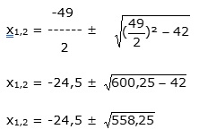
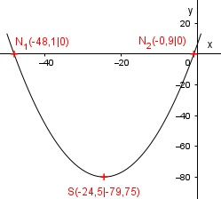

Aufgabe 68 Welche Koordinaten haben der Scheitelpunkt S und die Nullstellen N der Funktion 1 y = --- x2 + 7x + 6? 7 1 1 y = ---x2 + 7x + 6 |:--- 7 7 7y = x2 + 49x + 42 Quadratische Ergänzung : 7y = x2 + 49x + 600,25 – 600,25 + 42 mit x2 + 49x + 42 = (x + 24,5)2 7y = (x + 24,5)2 - 558,25 |:7 1 y = --- (x + 25,5)2 - 79,75 7 Dies ist die Scheitelpunktform. S abgelesen: S(-24,5|-79,75) Nullstellen: y = 0 1 1 0 = --- x2 + 7x + 6 |:--- 7 7 0 = x2 + 49x + 42 p, q – Formel : p = 49 ; q = 42  x1,2 = -24,5 ± 23,6 x1 = -24,5 – 23,6 = -48.1 x2 = -24,5 + 23,6 = -0,9 N1(-48,1|0) ; N2(-0,9|0) 